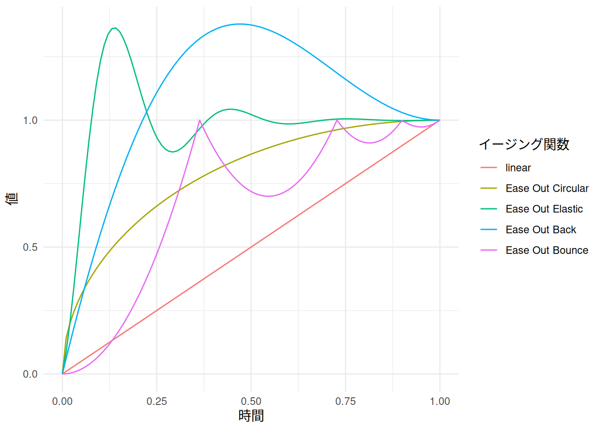

6 キーフレーム
6.1 キーフレームについて
ここまでに紹介した例では、フィルタとそのフィルタに固有の値とは1組ずつのペアになっていて、それぞれの効果の効き具合はあらかじめ調整した値で固定されているものでした。
一方で、たとえば「サイズ・位置・回転」であれば、サイズ（縮小拡大）の値を時間に応じてなめらかに変化させることができたら、次の映像の例のように、クリップの大きさをアニメーションさせるような効果を実現できるはずです。
キーフレームを使っている例
実は、この例のように、フィルタの効き具合は時間に応じて変化させることができます。これは、値を変化させたいフィルタについて、そのクリップの範囲内でフィルタの値の「変化点」を設定したうえで、それらの「変化点」のあいだで値を自動的に変化させることによって実現されています。
Shotcutでは、こうしたフィルタの値を変化させるための「変化点」のことを「キーフレーム」と呼びます。
Note
すべてのフィルタでキーフレームを設定することができるわけではありません。Shotcutに実装されているフィルタのなかには、キーフレームを設定することができないものもあります。
6.2 キーフレームを設定する
フィルタにキーフレームを設定するには、まずはじめに、「フィルタ」タブからキーフレームを設定したいフィルタを選択します。それから、キーフレームを追加したい値の右横にある「」というアイコンをクリックすると、再生ヘッドのある位置に、その値についてのキーフレームが追加されます。
このとき、画面の下部に表示されているパネルが「タイムライン」から「キーフレーム」に切り替わっているはずです。同じ値についてキーフレームをさらに追加するには、新たにキーフレームを追加したい位置に再生ヘッドを移動させてから、「キーフレーム」パネルの左横に表示されている「」アイコンをクリックします。また、キーフレームを削除したい場合、各キーフレームを右クリックすると表示されるコンテキストメニューから「削除」を選びます。
Note
そのクリップの任意のフレームをキーフレームに設定することを指して、クリップに「キーフレームを追加する」とか「キーフレームを打つ」といった言い方をします。
実際に「サイズ・位置・回転」の値について、キーフレームを設定するようすを見てみましょう。
キーフレームを設定する
キーフレームは値の「変化点」なので、ふつうは始点（値の動かしはじめ）と終点（値の動かし終わり）のように2つ以上の点を設定したうえで、それらの点のあいだで値をなめらかに変化させて使います。ここでは、トラックに配置したクリップに「サイズ・位置・回転」を適用し、このうち「縮小拡大」の値について、1秒だけかけて12.0%から90.0%になるように変化させています。
6.3 イージング（easing）
6.3.1 イージングについて
ふつうにキーフレームを設定した場合、対応する値は、時間の経過にしたがって一定の変化率で変化します。つまり、上の例であれば、「縮小拡大」の値が大きくなっている1秒間のどのフレームについて見ても、値が大きくなっていく速さは常に同じです。このような「値を等速に変化させる」アニメーションのことを「リニア（linear）」と表現します。
ところで、私たちが日常的に目にしている動きは、必ずしもリニアなものばかりではありません。
現実の物体は、即座に動いたり停止したりすることはなく、一定の速度で動くこともほとんどありません。引き出しを開けるとき、私たちは最初に引き出しをすばやく引き出し、それが外に出てくるにつれてゆっくりと動かします。床に向けてなにかを（例えばペンのような）放すと、最初に重力によって下に向かって加速し、床に当たった後上に跳ね返ります。
「イージング関数チートシート」より
そのため、この引用で指摘されているように、リニアなアニメーションでは、私たちがよく見慣れている動きとは性質が異なるものになっていて、映像を見る人に対して不自然な印象を与えてしまう場合があります。
そうしたケースにおいては、時間の経過にしたがって「値の変化率に緩急をつける」ことによって、より自然に見えるアニメーションを作成することができます。このように「値の変化率に緩急をつける」ようなアニメーションの仕方を指して「イージング（easing）」という言い方をします。
6.3.2 イージングの性格と強さ
アニメーションにおけるイージングには、大まかに
- 変化の性格（どのように緩急をつけるか）
- 変化の強さ（どれくらいの緩急をつけるか）
という2つの側面があります。Shotcutのようなイージングを設定できるソフトウェアでは、この2つの側面を組み合わせることによって、実際にある値がどのように変化するかを、その変化の仕方を表現する関数の名前として指定することができます。なお、そうした関数のことをここでは「イージング関数」と呼ぶことにします。
Note
Shotcutの画面上では、どのイージング関数がどのような変化の仕方に相当するかは、それぞれのイージング関数のアイコンを見ればだいたいわかるようになっています。
そのため、ここで説明されているイージング関数がそれぞれどのようなものかについて、とくに詳しく覚えておく必要はありません。
変化の性格（どのように緩急をつけるか）には、次の4種類があります（リニアも、あえて「緩急をつけない」という意味でイージングの一種としています）。
- リニア（linear）
- イーズイン（Ease In）
- イーズアウト（Ease Out）
- イーズインアウト（Ease In/Out）
「イーズ〇〇」の「〇〇」というのは、変化率を緩やかにする位置を表します。すなわち、「イン」は始点（値の動かしはじめ）の付近で変化率を緩やかにし、「アウト」は終点（値の動かし終わり）の付近で変化率を緩やかにすることを表します。したがって、イーズインアウトでは、変化の始点付近と終点付近の両方で変化率が緩やかになります。
また、変化の強さ（どれくらいの緩急をつけるか）には、次のような種類があります。
- Sinusoidal
- Quardratic
- Cubic
- Quartic
- Quintic
- Exponential
これらの変化の強さは、下にあるものほど、より強い変化になります。変化の強さは、直観的には、変化率が緩やかになっている「裾」の部分の長さに対応しています。たとえば、イーズアウトする場合、下のグラフのように、より強い変化であるほど、より急激に変化してから、より長い時間をかけて緩やかに変化するような動きになります。
このほかに、「裾」の部分にわたって特殊な動き方をする、次のような変化もあります。これらの変化についても、変化の強さと同様にイージング関数の名前に使うことができます。

6.3.3 イージングを設定する
Shotcutでキーフレームにイージングを設定するには、イージングを設定したいキーフレームを右クリックすると表示されるコンテキストメニューから、適用したいイージング関数を選択します。
「Ease In」と「Ease In/Out」については、始点になるキーフレームを右クリックすると表示されるコンテキストメニューから「To Next > Ease In」または「To Next > Ease In/Out」を選び、適用したいイージング関数を選択します。
「Ease Out」については、終点になるキーフレームを右クリックすると表示されるコンテキストメニューから「From Previous > Ease Out」を選び、適用したいイージング関数を選択します。
Tip
一般に、何かを目標の位置に表示させたり、移動させたりするようなアニメーションでは、イーズアウトを適用すると効果的な場合が多いとされます。
実際にイージング関数を選択しているようすを見てみましょう。
イージングを設定する
この例では、先ほどの例で見たのと同じクリップのキーフレームに対して「Ease Out Back」を適用しています。また、同じクリップについて、あらかじめフェードアウトをかけてあります。